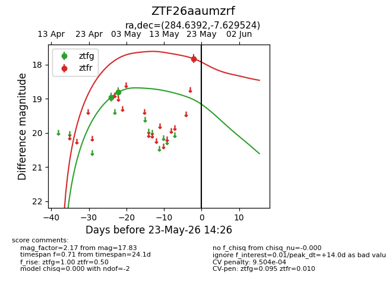
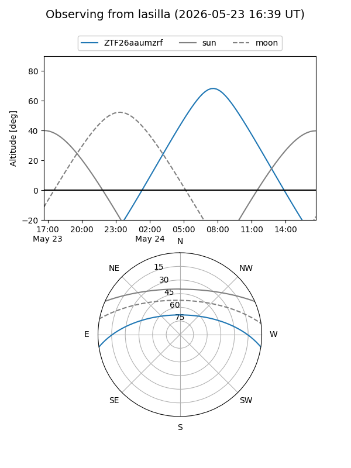
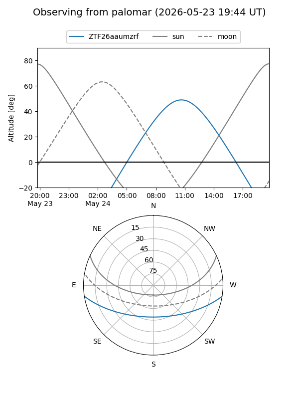
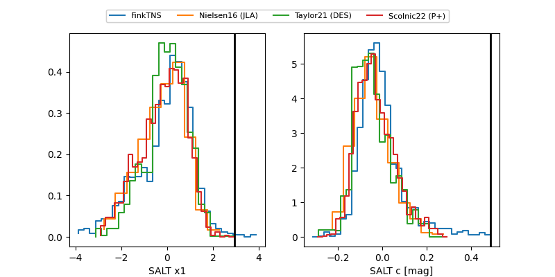

ZTF26aaumzrf
Target ZTF26aaumzrf at 2026-05-23 14:28
Aliases and brokers:
lsst-FINK: link
lsst-Lasair: link
lsst-ALeRCE: link
ztf-FINK: link
ztf-Lasair: link
ztf-ALeRCE: link
alt names
ZTF26aaumzrf (ztf,fink_ztf)
Coordinates:
equatorial (ra, dec) = 284.6392,-7.62952
equatorial (HMS+DMS) = 18:58:33.41,-07:37:46.29
galactic (l, b) = (26.9318,-5.04485)
Flags:
likely cv: !
Photometry:
last ztfg=18.81, ztfr=17.83
2 ztfg, 1 ztfr detections
Lightcurve

Visibility


Additional plots
